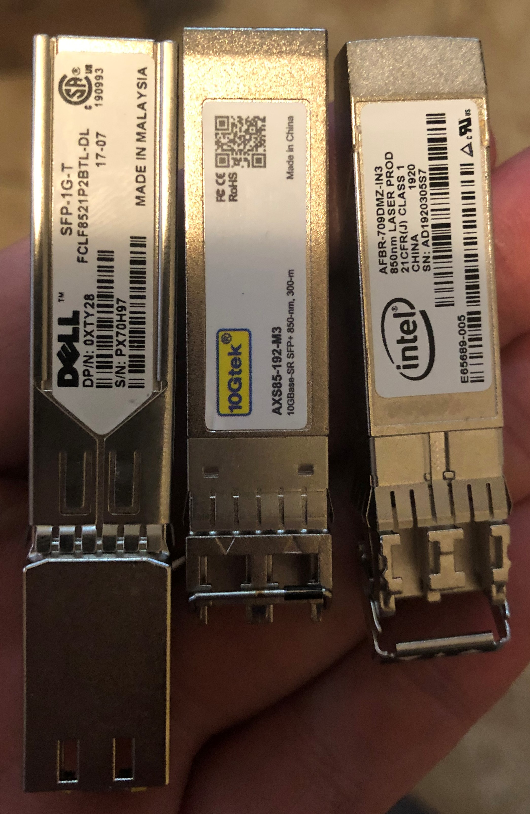
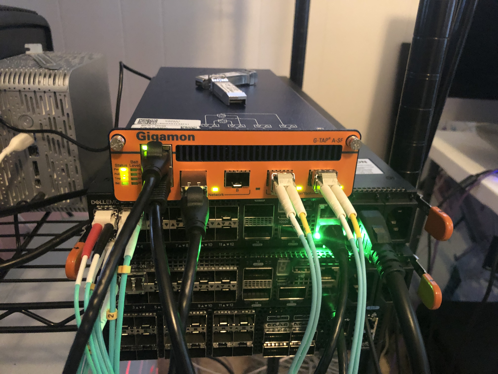
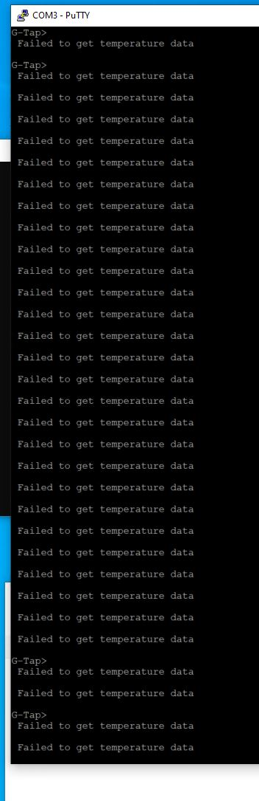
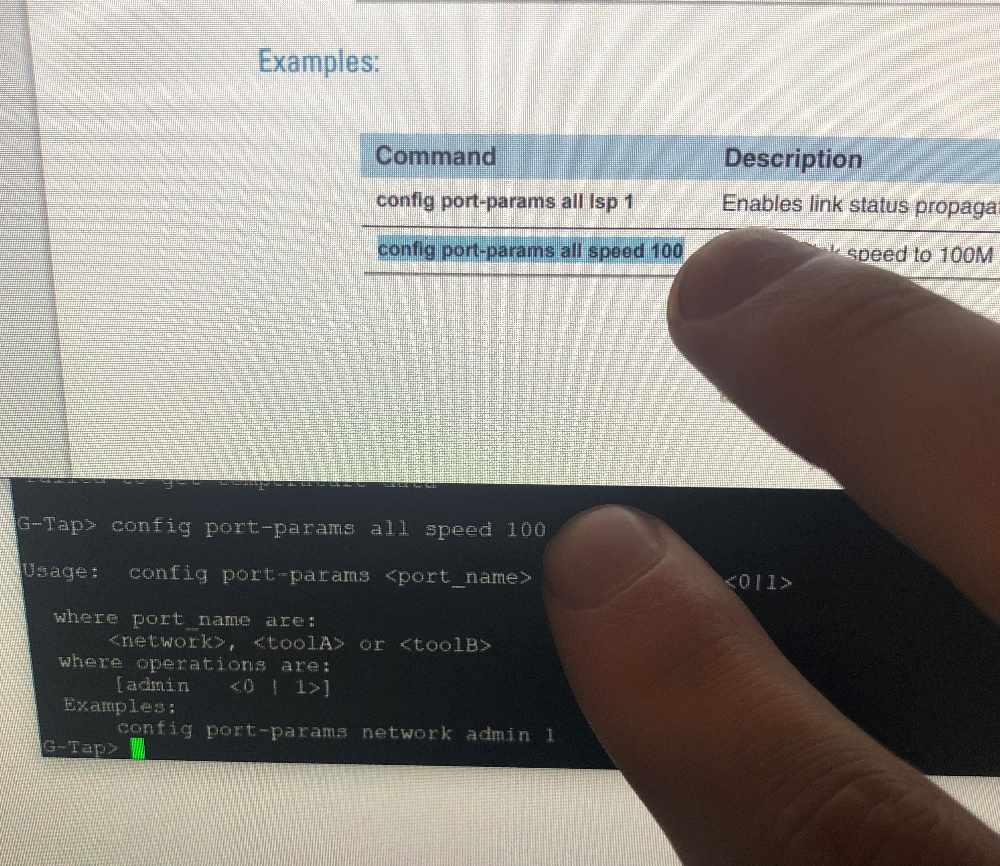
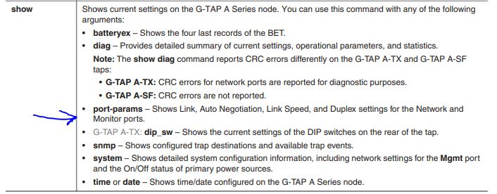
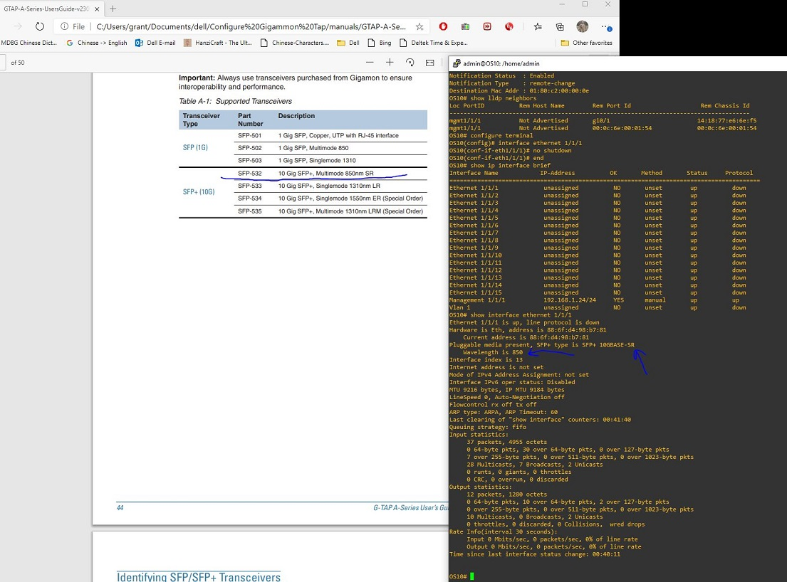

Configure Gigamon Tap
Getting Help
You have to register with a valid serial number on Gigamon's support site. For it to work your name either has to be attached to the account
or you have to have a valid .mil address.
My Setup
Gigamon Model Number / Version
GTP-ASF01
Hardware Revision: G-TAP A2/SF
G-Tap> show version
SW Version : 2.3.03 Filename=gtb_ASF_IMAGE_2.3.03_20161118.bin
SFPs Tested

Front Panel Configuration

Traffic Generation
Traffic was generated on a laptop going into port network 1 and load balanced across ports toolA and toolB
Configuring the Device
Console Settings
I used the following console settings:
- On Windows with Putty my serial line was COM3
- Speed: 115200
- Data bits: 8
- Stop bits: 1
- Parity: None
- Flow Control: None
Logging In
Default password is root123. There is no username.
Configure Management
config ipaddr 192.168.1.105 subnetmask 255.255.255.0
WARNING For reasons unknown, telnet is enabled by default on the management interface. If you are using this outside a lab you'll probably want to disable it with telnet 0.
At this juncture, you can telnet to the management IP if you want to.
If you want to change the default password this can be done with passwd.
If you need to set the date or time you can do so with the commands time <hh:mm:ss>
or date <mm-dd-yy> respectively.
Configure TAP Capability
According to the instructions no configuration is required.
Test Results
Run 1 - Pass
Scenario: Get nominal load balancing working. For testing I added a second Dell 1Gb/s copper SFP. Distant end was a USB 1Gb/s copper adapter on a laptop.
Result: Worked as expected. Input went into the network port and load balanced out the toolA port.
Run 2 - Fail
Scenario: Test to see if the Intel 10Gb/s NIC will run. Distant end was another Intel 10Gb/s SFP in an Intel x710 attached to ESXi.
Result: Failure. The tap detected the insert and removal of the SFP:
Monitor Port B: "SFP" Module Removed
Monitor Port B: NOTE: I2C device respond successfully!
"SFP+ SR" Inserted
However, the distant end, which I confirmed to be working using a Dell 4112F-ON, would not come up. Note: As long as the SFP was seated in the Gigamon the green light remained on. There was no correlation between plugging in the cable and the green light.
Run 3 - Fail
Scenario: Same as 2 except I used the 3rd part Gtek SFP+.
Results: Same as Run 2.
Run 4 - Fail
Scenario: Same as 2 except with a 10Gb/s Dell adapter.
Results: Same as Run 2.
Run 5 - Fail
Scenario: I tried with the 10Gb/s Dell SFP again - this time I made the distant end a RHEL box.
Results: RHEL saw nothing. ethtool showed both the duplex and speed as unknown.
Nothing came up.
Run 6 - Fail
Scenario: I tried with the 10Gb/s Dell SFP again - this time I made the distant end a Dell 4112F-ON.
Results: Even after manually setting speed, duplex, autonegotiation, and double checking the interface types it still didn't come up.
Other Helpful Commands
- If you need to close or open the tap you can do so using
taptx <active|passive>where active pushes traffic to the tool ports and passive only pushes traffic through the network ports. show systemgives you a nice overview of the status of the tap and what is plugged in where.G-Tap> show system ======================================================================== System Information ======================================================================== System Name : GTP-A2/SF S/N=*******, rev=A1, HW Built=10/24/2019 SW Version : 2.3.03 Filename=gtb_ASF_IMAGE_2.3.03_20161118.bin App Loader Ver : 2.04 Current : Mon Jun 22, 2020 20:50:26 System Boot : Mon Jun 22, 2020 17:02:39 ------------------------------------------------------------------------ Eth Mgmt Port : DHCP=DISABLE, MAC=00:1D:AC:1B:09:DE : 192.168.1.105/255.255.255.0 gateway=255.255.255.255 : Autoneg=ON, Link=Up Speed=100 Duplex=Full ------------------------------------------------------------------------ Telnet Access : Enabled, Timeout=300 seconds Console baud : 115200 bps ------------------------------------------------------------------------ Power Supply : AC adapter=[ON] DC -48V=[OFF] PoE=[OFF] ------------------------------------------------------------------------ Battery fuel gauge busy. Please Try again... ------------------------------------------------------------------------ Temperatures : Board 38 C, Battery 2 C Fan : OFF ------------------------------------------------------------------------
Weird Behaviors
Temperature
I continuously saw a warning for temperature:

Battery
I saw a warning for the battery:
NOTE: Battery fuel gauge busy! Will try again later
It looks like you can buy a battery separately so I believe this to be expected.
Where is SSH?
I was unable to figure out how to configure SSH. In the manual they only had telnet and console listed. I feel like I must be missing something.
Telnet Console Didn't Display Correctly
When I typed in the telnet console with Putty the text would only appear after I hit enter.
Commands Straight from the Manual Do Not Work

Using the arrow keys in the command line deletes text instead of moving cursor
Why?
Manual is incorrect about display output
Ex:
G-Tap> show port-params
NETWORK MONITOR
Parameter Port A Port B Port A Port B
================= ========== ========== ========== ==========
Admin: 1 1 1 1
Signal Detect: 1 0 1 1
Tx Power(dBm): n/a n/a n/a -2.36
Rx Power(dBm): n/a n/a n/a -2.50
SFP Module Type: SFP Copper -- SFP Copper SFP+ SR
Cable Length(m): n/a n/a n/a n/a

The speed, duplex and autonegotiation settings are not listed anywhere in the output.
Bizzare Compatibility Errors with SFPs
Even after confirming all setting, fixing the speed at 10Gb/s, duplex at full, and turning off autonegation, the fiber interface still didn't come up. I went and cross referenced the manual to see what type of SFPs they support and confirmed that the wavelength and type matched.
